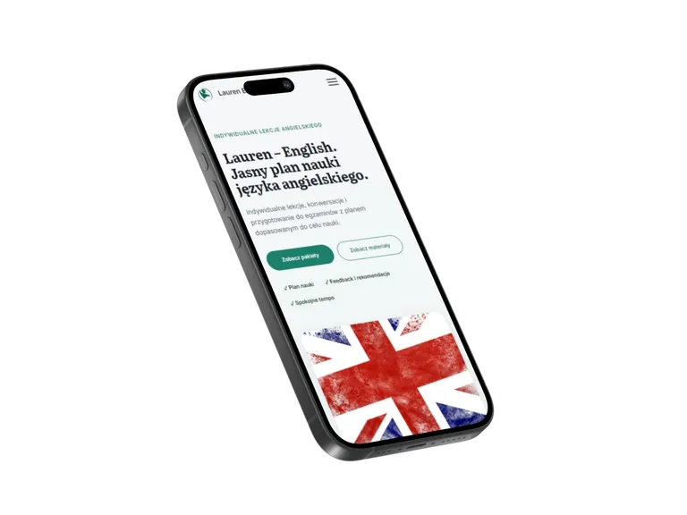
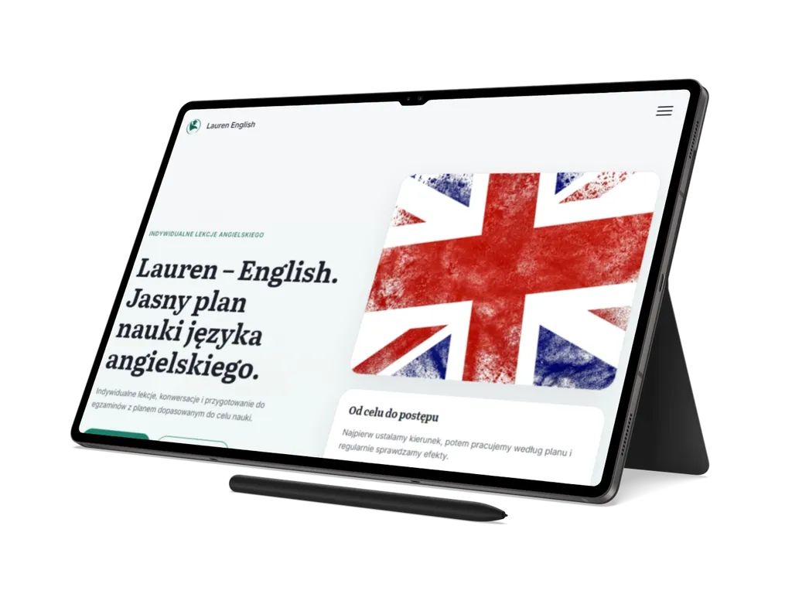

01
Lauren English
Statyczny, wielostronicowy serwis edukacyjny prezentujący indywidualną ofertę nauki angielskiego, materiały, pakiety i lokalny dziennik postępów.
Przegląd projektu
Lauren English łączy kompletną ofertę edukacyjną z praktycznymi narzędziami: katalogiem materiałów i dziennikiem postępów działającym lokalnie w przeglądarce.
Każda trasa jest osobnym dokumentem HTML, a wspólna powłoka, metadane, treści oparte na danych i Service Worker są składane przez statyczne skrypty Node.js.
Zakres obejmuje stronę główną, usługi, pakiety, katalog materiałów, dziennik postępów, kontakt, dokumenty prawne oraz techniczne widoki błędu, offline i potwierdzenia wysłania formularza.
Serwis nie korzysta z frameworka ani routingu SPA. Kanoniczne źródła CSS i JavaScript są ładowane bezpośrednio, a interakcje rozwijają semantyczną treść dostępną także bez JavaScript.
EdukacjaStronyJęzyk angielskiPWA
Zakres i akcenty
Case study pokazuje połączenie czytelnej oferty edukacyjnej, treści opartych na danych oraz funkcji, które wspierają naukę bez zaplecza kont użytkowników.
02
Dziennik postępów w przeglądarce
03
Dostępność, formularz i offline
Technologie i standard
Lauren English wykorzystuje semantyczny HTML5, warstwowy CSS i natywne moduły JavaScript, a statyczny pipeline składa treść, metadane i obsługę PWA.
Architektura CSS zachowuje kolejność warstw od tokenów i bazowych reguł po komponenty, sekcje i strony. Funkcje JavaScript są rozdzielone na izolowane moduły, które kończą działanie, gdy ich komponent nie występuje na danej stronie.
- statyczne skrypty Node.js składają wspólną powłokę, metadane i treści oparte na danych,
- PostCSS, cssnano, esbuild i imagemin wspierają pomocniczy pipeline assetów,
- projekt zawiera walidatory HTML, treści, danych, CSS, SEO, PWA i workflow oraz testy Playwright.


Dalszy krok
Zobacz serwis Lauren English online albo wróć do pełnego portfolio.
Lauren English pokazuje zakres pracy nad wielostronicowym serwisem edukacyjnym: od oferty i treści opartych na danych po lokalny dziennik postępów, formularz, SEO, PWA i obsługę offline.